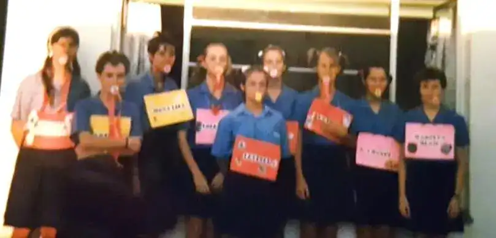
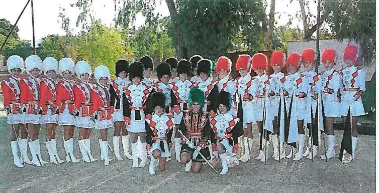
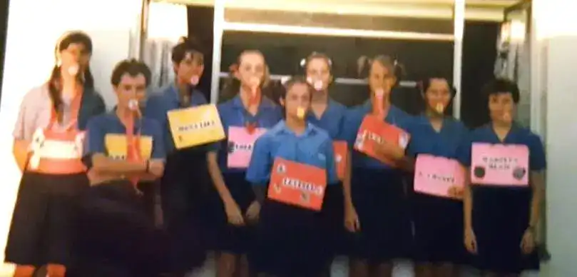
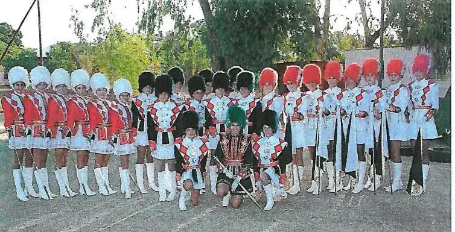

Die skool behoort nie aan ‘n persoon of ‘n uitgesoekte
groepie nie. Die skool is joune. Jy wat op hierdie
spesifieke oomblik daar is. Jy gaan bepaal waarheen
die skool op pad is. En niemand is so goed om dit alleen
te doen nie, en net so is niemand ook te gering of
onbelangrik om uitgesluit te word nie.
Mnr. Dawie O'Callaghan
Stigtershoof 1996-2001
Ek en my gesin het die KPS-gemeenskap beleef as ’n groep gelowige mense vir wie die
tydbeproefde westerse waardes soos eerlikheid, verantwoordelikheid, stiptelikheid,
spaarsamigheid, netheid en harde werk belangrik is. Hierdie en vele ander dinge wat vir
KPS belangrik is, sal die voortbestaan van die skool verseker.
Dr. Danie Brink
Skoolhoof 2009-2010
KPS het ʼn kultuur wat in jou hart
inkruip en maak dat jare nadat jy reeds weg is, jy steeds hoendervleis kry en jou hart wil
bars van trots as jy die onmisbare navy, jade en wit strepe op ʼn sportveld sien.
Mnr. Tinus Botma
Skoolhoof 2012-2018
Soos die vroeë oggendson sy strale gooi oor klip en sand, het jy
KPS jou kennis oorgedra aan menige kinderverstand.
Leerkrag en ouers het saam soos die arend sy kleintjies dra op
sy vleuels, hul vlerke al hoër gelig en wyer uitgestrek om
menige familie in te sluit.
Mev. Magriet Bronkhorst
Onderwyseres 1997-2018
So ’n reis na gister is ’n dankbare stilstaan by mense wat saam met jou
op reis was,’n onthou van reisigers wat alreeds die aardse pad verlaat
het, ’n waardering van diegene wat hul water en padkos met jou gedeel
het; soms ’n papwiel help regmaak het en ’n bewondering van die
pioniers wat die waagmoed gehad het om die skool te begin.
Mev. Drienie Nolte
Onderwyseres 1998-
Ons streef na
Christelik morele waardes en beginsels. Die produk van ons strewe en die uitvoering
daarvan is leerlinge met sterk karakters – trotse leerlinge wat goed gedissiplineer is.
Met respek vir hulleself en daarom het hulle ook respek vir ander mense.
George Roux
Oudbeheerraadslid


 


